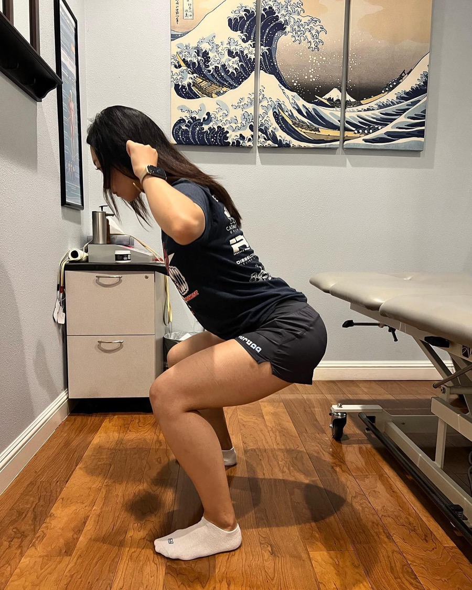

Car Accident Chiropractor in San Jose
After a collision, Dr. Lam Nguyen evaluates painful and restricted movement, explains the findings, and builds an individualized plan to support a safe return to everyday activity.
Care available in English, Español, Tiếng Việt, and Tagalog.

One-on-One Care With Dr. Nguyen
Your first visit is designed to answer three questions: what was affected, what movements are limited now, and what type of care is appropriate. You will not be moved through a standard, cookie-cutter routine.
- 1Tell us what changed
Review the collision, symptoms, prior care, and everyday activities that now feel different.
- 2Complete an individual examination
Dr. Nguyen evaluates movement, joint function, soft tissue, strength, and signs that may require referral.
- 3Leave with a clear plan
Understand the findings, appropriate next steps, expected progression, and how your response will be measured.
A Clinical Evaluation After a Collision
A collision can expose the neck, back, shoulders, and surrounding soft tissue to rapid forces. Some people notice discomfort immediately; others become more aware of stiffness, headaches, or movement limitations after the initial stress response settles.
Dr. Lam Nguyen, D.C. has provided chiropractic and injury-focused care in San Jose for more than 20 years. He begins with the history of the crash and a physical examination to identify what is painful, what is restricted, what remains strong, and whether chiropractic care is appropriate. Severe, worsening, or neurologic symptoms may require urgent medical evaluation or referral.
Seek urgent care when appropriate: Emergency symptoms such as loss of consciousness, chest pain, severe or worsening headache, new weakness, numbness, confusion, or difficulty walking require immediate medical attention.
Concerns Commonly Evaluated After a Crash
- Neck stiffness, reduced rotation, or pain with everyday movement
- Upper- or lower-back pain with sitting, standing, bending, or lifting
- Headaches associated with neck tension or restricted movement
- Shoulder or upper-body discomfort after bracing or seatbelt loading
- Soft-tissue tenderness, guarding, or reduced tolerance for activity
- Loss of confidence returning to work, exercise, or normal movement
Care Changes as Recovery Changes
During the more irritable stage, care may emphasize comfortable motion, symptom management, and avoiding unnecessary aggravation. As tolerance improves, the plan can progress toward mobility, controlled loading, strength, and confidence with daily tasks. When appropriate, care may include chiropractic treatment, Active Release Technique, Graston Technique, and corrective exercise. There is no standard timetable: recommendations depend on examination findings and response to care.
Helpful items to bring: Any available discharge instructions, imaging reports, medication list, and relevant medical information. Review what to expect at your first visit. For questions about liens, records, or communication with an attorney or insurer, visit our personal injury information page.
Four Priorities After a Car Accident
- Address urgent symptoms — use emergency or urgent medical care when the situation calls for it.
- Note functional changes — track movements, work tasks, sleep positions, and activities that feel different.
- Gather clinical information — bring available reports and instructions to your evaluation.
- Choose appropriate care — begin only after the findings, options, and expected progression are explained.
Related Services
Car Accident FAQs
When should I be evaluated after a car accident?
Seek urgent or emergency care for severe symptoms. For non-emergency musculoskeletal concerns, arrange an evaluation promptly because stiffness, headaches, or movement limitations can become more noticeable after the initial stress response settles.
What happens during the evaluation?
Dr. Nguyen reviews the collision and health history, evaluates painful and restricted movements, checks joint and soft-tissue function, and explains whether chiropractic care is appropriate.
Does every patient receive the same treatment?
No. Recommendations depend on examination findings, symptom irritability, tolerance, goals, and whether another medical provider or diagnostic testing is needed.
Do you work with attorneys or lien-based accident cases?
VAL Chiropractic can provide clinical records and offers lien-based care for qualifying personal injury cases. Eligibility and billing options are discussed with the office before treatment begins.
Is the consultation free?
Yes. VAL Chiropractic offers a free, no-obligation consultation for motor vehicle accident and personal injury matters. Examination and treatment, if recommended, are separate.
Injured in a Car Accident? Call Us Today.
VAL Chiropractic is located at 3239 South White Road, San Jose, CA 95148. New patients are welcome, and same-week appointments may be available.
Call (408) 532-1139